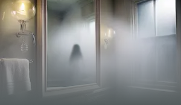

OVERLEV
Sådan undgår du at blive hovedpersonen i din egen dødsscene - læs de 5 overlevelses tips.
Se mereHer er de officielle råd til at forblive i live.

Sådan undgår du at blive hovedpersonen i din egen dødsscene - læs de 5 overlevelses tips.
Se mere
Har du set noget, er du i fare, har du mistet nogen fra din gruppe? Kontakt os direkte igennem denne form og modtag hjælp!
Se mere
Flere unge er forsvundet efter ture til isolerede sommerhuse. Et mønster tegner sig: dårlig forbindelse, åbne døre – og én, der venter i mørket.
I en tid med reelle kriser vælger Dansk Folkeparti at gå i krig med...
 Læs mere
Læs mere
Statens Institut for Filmisk Overlevelse lancerer ny guide, der skal hjælpe danskerne med at undgå klassiske gyserfilm-fejl – og potentielle mordere.
 Læs mere
Læs mere
En TikTok-video, hvor skærmen er frosset midt i en gyserleg ...
 Læs mere